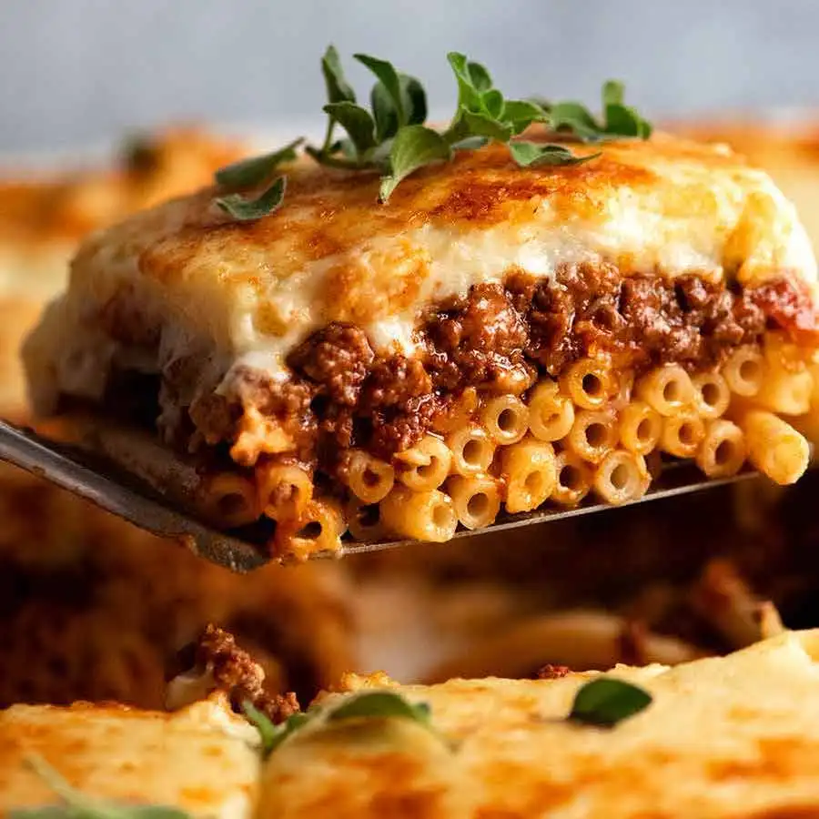

Pastitsio takes its name from the Italian pasticcio, a large family of pies featuring pasta and ragú. Pastitsio is to Greeks what lasagne are to the Italians and what mac and cheese is to Americans - intensely aromatic, rich and gooey layers of tubular pasta in a hearty sauce consisting of tomatoes and ground lamb meat, topped with béchamel sauce and, ideally, sprinkled with grated kefalotyri or kasseri cheese.
Meal prep time : 1 hour 35 minutes
Servings : 8